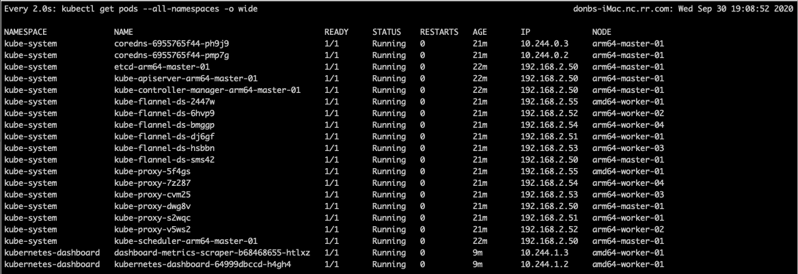

Table of Contents
Installation Notes
-
Force all pods in a specific namespace to schedule on defined hosts with Kubernetes
-
Understanding and using the Kubernetes PodNodeSelector Admission Controller
Raspberry Pi Monitoring
sudo apt-get update && sudo apt-get install htop -y
make up
xcode-select --install

Flash
flash --userdata setup/cloud-config.yml ~/Downloads/ubuntu-20.04-preinstalled-server-arm64+raspi.img
AMD64
static ip
- (AMD) sudo vim /etc/netplan/01-netcfg.yaml
- (ARM) /etc/netplan/50-cloud-init.yaml
network:
version: 2
ethernets:
eth0:
dhcp4: false
addresses: [192.168.2.5?/16]
gateway4: 192.168.2.253
nameservers:
addresses: [192.168.2.253, 8.8.8.8, 8.8.4.4]
- sudo netplan apply
- ip address
ssh
- sudo apt install ssh
- sudo systemctl enable –now ssh
- sudo systemctl status ssh
swapfile
- sudo vim /etc/fstab
#/swapfile
- sudo reboot
or
- sudo poweroff
update/upgrade
su
Add User
sudo adduser -u 1200 <username>
Change password
pi@arm64-05:~$ sudo passwd dbuddenbaum
New password:
Retype new password:
passwd: password updated successfully
SUDO
sudo visudo
dbuddenbaum ALL=(ALL) NOPASSWD:ALL
<<<<<<< HEAD
Copy Id
ssh-copy-id pi@$ip_address
======= ssh-copy-id dbuddenbaum@192.168.2.58
/usr/bin/ssh-copy-id: INFO: Source of key(s) to be installed: "/Users/donbuddenbaum/.ssh/id_rsa.pub"
/usr/bin/ssh-copy-id: INFO: attempting to log in with the new key(s), to filter out any that are already installed
/usr/bin/ssh-copy-id: INFO: 1 key(s) remain to be installed -- if you are prompted now it is to install the new keys
dbuddenbaum@192.168.2.58's password:
Number of key(s) added: 1
Now try logging into the machine, with: "ssh 'dbuddenbaum@192.168.2.58'"
and check to make sure that only the key(s) you wanted were added.
38d6a03510f3dafb5c27383383689baf396cd5ce dbuddenbaum@amd64-worker-03:~$ sudo vim /etc/sysctl.d/99-kubernetes-cri.conf
net.bridge.bridge-nf-call-iptables=1
/usr/sbin/sysctl net.bridge.bridge-nf-call-iptables=1
/usr/sbin/sysctl/net.bridge.bridge-nf-call-iptables=1
net.bridge.bridge-nf-call-ip6tables=1
net.bridge.bridge-nf-call-arptables=1
sudo modprobe br_netfilter
install Ceph on ARM64 SBCs using Rook - kubernetes-xenial main v1.9.3
dbuddenbaum@amd64-worker-03:~$ echo “deb http://packages.azlux.fr/debian/ buster main” | sudo tee /etc/apt/sources.list.d/azlux.list
deb http://packages.azlux.fr/debian/ buster main
dbuddenbaum@amd64-worker-03:~$ wget -qO - https://azlux.fr/repo.gpg.key | sudo apt-key add -
OK
dbuddenbaum@amd64-worker-03:~$ sudo apt update
Hit:1 http://us.archive.ubuntu.com/ubuntu focal InRelease
Building dependency tree
Reading state information... Done
All packages are up to date.
N: Skipping acquire of configured file 'stable/binary-i386/Packages' as repository 'https://download.docker.com/linux/ubuntu focal InRelease' doesn't support architecture 'i386'
dbuddenbaum@amd64-worker-03:~$ sudo apt install log2ram
Reading package lists... Done
Building dependency tree
Reading state information... Done
The following packages were automatically installed and are no longer required:
conntrack cri-tools ebtables socat
Use 'sudo apt autoremove' to remove them.
The following NEW packages will be installed:
log2ram
0 upgraded, 1 newly installed, 0 to remove and 0 not upgraded.
Need to get 4288 B of archives.
After this operation, 0 B of additional disk space will be used.
Get:1 http://packages.azlux.fr/debian buster/main amd64 log2ram all 1.6.0 [4288 B]
Fetched 4288 B in 1s (7037 B/s)
Selecting previously unselected package log2ram.
(Reading database ... 107469 files and directories currently installed.)
Preparing to unpack .../archives/log2ram_1.6.0_all.deb ...
Unpacking log2ram (1.6.0) ...
Setting up log2ram (1.6.0) ...
Created symlink /etc/systemd/system/sysinit.target.wants/log2ram.service → /etc/systemd/system/log2ram.service.
Created symlink /etc/systemd/system/timers.target.wants/log2ram-daily.timer → /etc/systemd/system/log2ram-daily.timer.
##### Reboot to activate log2ram #####
##### edit /etc/log2ram.conf to configure options ####
make OPTS=–limit=amd64-worker-xx up
kubeadm token create -> build/k8s-token
dbuddenbaum@arm64-master-01:~$ sudo kubeadm token create –print-join-command
W1017 21:24:48.048542 1003621 validation.go:28] Cannot validate kube-proxy config - no validator is available
W1017 21:24:48.048690 1003621 validation.go:28] Cannot validate kubelet config - no validator is available
kubeadm join 192.168.2.50:6443 --token 1lzi9g.q1e5iabf9ct3khwe --discovery-token-ca-cert-hash sha256:758ae780462b33c21506c4052e4e1de8ddec35ffc167a931fa1cd6f85ff9ede3
dbuddenbaum@amd64-worker-02:~$ sudo kubeadm join 192.168.2.50:6443 –token 1lzi9g.q1e5iabf9ct3khwe –discovery-token-ca-cert-hash sha256:758ae780462b33c21506c4052e4e1de8ddec35ffc167a931fa1cd6f85ff9ede3
W1018 01:26:30.473800 6631 join.go:346] [preflight] WARNING: JoinControlPane.controlPlane settings will be ignored when control-plane flag is not set.
[preflight] Running pre-flight checks
[WARNING IsDockerSystemdCheck]: detected "cgroupfs" as the Docker cgroup driver. The recommended driver is "systemd". Please follow the guide at https://kubernetes.io/docs/setup/cri/
[preflight] Reading configuration from the cluster...
[preflight] FYI: You can look at this config file with 'kubectl -n kube-system get cm kubeadm-config -oyaml'
[kubelet-start] Downloading configuration for the kubelet from the "kubelet-config-1.17" ConfigMap in the kube-system namespace
[kubelet-start] Writing kubelet configuration to file "/var/lib/kubelet/config.yaml"
[kubelet-start] Writing kubelet environment file with flags to file "/var/lib/kubelet/kubeadm-flags.env"
[kubelet-start] Starting the kubelet
[kubelet-start] Waiting for the kubelet to perform the TLS Bootstrap...
This node has joined the cluster:
* Certificate signing request was sent to apiserver and a response was received.
* The Kubelet was informed of the new secure connection details.
Run 'kubectl get nodes' on the control-plane to see this node join the cluster.
getting events from kubernetes
kubectl get events –all-namespaces –sort-by=’.metadata.creationTimestamp’
Persistent Volume
update secutiry fixes
apt-get update sudo apt-get install -y –only-upgrade $( apt-get –just-print upgrade | awk ‘tolower($4) ~ /.security./ || tolower($5) ~ /.security./ {print $2}’ | sort | uniq )
###cgroups for intel
One aspect I want to point out is setting the cgroup for use by kubeadm. If you choose to use Docker as your container runtime, you should set it to use the cgroup systemd rather than cgroupfs as explained here.
In /etc/docker/daemon.conf
{
"exec-opts": ["native.cgroupdriver=systemd"],
"log-driver": "json-file",
"log-opts": {
"max-size": "100m"
},
"storage-driver": "overlay2"
}
Then reload
sudo systemctl daemon-reload
sudo systemctl restart docker
temperature probe amd64
sudo apt-get install lm-sensors
sudo service kmod start
dbuddenbaum@amd64-05:~$ sensors
coretemp-isa-0000
Adapter: ISA adapter
Core 0: +70.0°C (high = +74.0°C, crit = +100.0°C)
Core 1: +63.0°C (high = +74.0°C, crit = +100.0°C)
Core 2: +65.0°C (high = +74.0°C, crit = +100.0°C)
Core 3: +64.0°C (high = +74.0°C, crit = +100.0°C)
sudo sensors-detect
Updating Linux
sudo apt-get update
sudo apt-get upgrade
sudo reboot